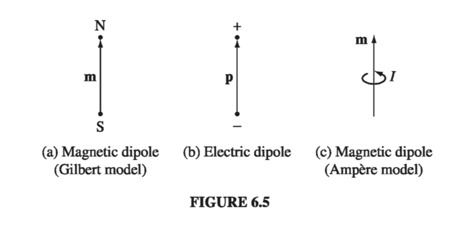

6.1: Magnetization
6.1.1: Diamagnets, Paramagnets, Ferromagnets
If you ask the average person what "magnetism" is, you will probably be told about refrigerator decorations, compass needles, and the North Pole - none of which has any obvious connection with moving charges or current-carrying wires. Yet all magnetic phenomena are due to electric charges in motion, and in fact, if you could examine a piece of magnetic material on an atomic scale you would find tiny currents: electrons orbiting around nuclei and spinning about their axes. For macroscopic purposes, these current loops are so small that we may treat them as magnetic dipoles. Ordinarily, they cancel each other out because of the random orientation of the atoms. But when a magnetic field is applied, a net alignment of these magnetic dipoles occurs, and the medium becomes magnetically polarized, or magnetized.
Unlike electric polarization, which is almost always in the same direction as E, some materials acquire a magnetization parallel to B (paramagnets) and some opposite to B (diamagnets). A few substances (called ferromagnets, in deference to the most common example, iron) retain their magnetization even after the external field has been removed - for these, the magnetization is not determined by the present field but by the whole magnetic "history" of the object. Permanent magnets made of iron are the most familiar examples of magnetism, but from a theoretical point of view they are the most complicated; I'll save ferromagnetism for the end of the chapter, and begin with qualitative models of paramagnetism and diamagnetism.
6.1.2: Torques and Forces on Magnetic Dipoles
A magnetic dipole experiences a torque in a magnetic field, just as an electric dipole does in an electric field. Let's calculate the torque on a rectangular current loop in a uniform field B. (Since any current loop could be built up from infinitesimal rectangles, with all the "internal" sides canceling, as indicated in Fig. 6.1, there is no real loss of generality here; but if you prefer to start from scratch with an arbitrary shape, see Prob. 6.2.) Center the loop at the origin, and tilt it an angle from the z axis towards the y axis (Fig. 6.2). Let B point in the z direction. The forces on the two sloping sides cancel (they tend to stretch the loop, but they don't rotate it). The forces on the "horizontal" sides are likewise equal and opposite (so the net force on the loop is zero), but they do generate a torque:
The magnitude of the force on each of these segments is and therefore or where is the magnetic dipole moment of the loop. Equation 6.1 gives the torque on any localized current distribution, in the presence of a uniform field; in a non-uniform field it is the exact torque (about the center) for a perfect dipole of infinitesimal size.
Notice that Eq. 6.1 is identical in form to the electrical analog, Eq. 4.4: . In particular, the torque is again in such a direction as to line the dipole up parallel to the field. It is this torque that accounts for paramagnetism. Since every electron constitutes a magnetic dipole (picture it, if you wish, as a tiny spinning sphere of charge), you might expect paramagnetism to be a universal phenomenon. Actually, quantum mechanics (specifically, the Pauli exclusion principle) tends to lock the electrons within a given atom together in pairs with opposing spins, and this effectively neutralizes the torque on the combination. As a result, paramagnetism most often occurs in atoms or molecules with an odd number of electrons, where the "extra" unpaired member is subject to the magnetic torque. Even here, the alignment is far from complete, since random thermal collisions tend to destroy the order.
In a uniform field, the net force on a current loop is zero the constant B comes outside the integral, and the net displacement around a closed loop vanishes. In a nonuniform field, this is no longer the case. For example, suppose a circular wire ring of radius R, carrying a current I, is suspended above a short solenoid in the "fringing" region (Fig 6.3). Here B has a radial component, and there is a net downward force on the loop (Fig 6.4) For an infinitesimal loop, with dipole moment m, in a field B, the force is
Once again the magnetic formula is identical to its electrical "twin," if we write the latter in the form .
If you're starting to get a sense of deja vu, perhaps you will have more respect for those early physicists who thought magnetic dipoles consisted of positive and negative magnetic "charges" (north and south "poles," they called them), separated by a small distance, just like electric dipoles (Fig. 6.5(a)). They wrote down a "Coulomb's law" for the attraction and repulsion of these poles, and developed the whole of magnetostatics in exact analogy to electrostatics. It's not a bad model, for many purposes - it gives the correct field of a dipole (at least, away from the origin), the right torque on a dipole (at least, on a stationary dipole), and the proper force on a dipole (at least, in the absence of external currents). But it's bad physics, because there's no such thing as a single magnetic north pole or south pole. If you break a bar magnet in half, you don't get a north pole in one hand and a south pole in the other; you get two complete magnets. Magnetism is not due to magnetic monopoles, but rather to moving electric charges; magnetic dipoles are tiny current loops (Fig. 6.5(c)), and it's an extraordinary thing, really, that the formulas involving m bear any resemblance to the corresponding formulas for p. Sometimes it is easier to think in terms of the "Gilbert" model of a magnetic dipole (separated monopoles), instead of the physically correct "Ampere" model (current loop). Indeed, this picture occasionally offers a quick and clever solution to an otherwise cumbersome problem (you just copy the corresponding result from electrostatics, changing to , to , and to ). But whenever the close-up features of the dipole come into play, the two models can yield strikingly different answers. My advice is to use the Gilbert model, if you like, to get an intuitive "feel" for a problem, but never rely on it for quantitative results.

6.1.3: Effect of a Magnetic Field on Atomic Orbits
Electrons not only spin; they also revolve around the nucleus - for simplicity, let's assume the orbit is a circle of radius R (Fig. 6.9). Although technically this orbital motion does not constitute a steady current, in practice the period is so short that unless you blink awfully fast, it's going to look like a steady current: (The minus sign accounts for the negative charge of the electron.) Accordingly, the orbital dipole moment is Like any other magnetic dipole, this one is subject to a torque when you turn on a magnetic field. But it's a lot harder to tilt the entire orbit than it is the spin, so the orbital contribution to paramagnetism is small. There is, however, a more significant effect on the orbital motion: The electron speeds up or slows down, depending on the orientation of B. For whereas the centripetal acceleration is ordinarily sustained by electrical forces alone, in the presence of a magnetic field there is an additional force, . (To avoid confusion with the magnetic dipole moment m, we write the mass of the electron as .) For the sake of argument, let's say that B is perpendicular to the plane of orbit, as shown in Fig 6.10; then Under these conditions, the new speed is greater than v


A change in orbital speed means a change in the dipole moment (Eq. 6.4): Notice that the change in m is opposite to the direction of B. (An electron circling the other way would have a dipole moment pointing upward, but such an orbit would be slowed down by the field, so the change is still opposite to B.) Ordinarily, the electron orbits are randomly oriented, and the orbital dipole moments cancel out. But in the presence of a magnetic field, each atom picks up a little "extra" dipole moment, and these increments are all anti-parallel to the field. This is the mechanism responsible for diamagnetism. It is a universal phenomenon, affecting all atoms. However, it is typically much weaker than paramagnetism, and is therefore observed mainly in atoms with even numbers of electrons, where paramagnetism is usually absent.
In deriving Eq. 6.8, I assumed that the orbit remains circular, with its original radius R. I cannot offer a justification for this at the present stage. If the atom is stationary while the field is turned on, then my assumption can be proved - this is not magnetostatics, however, and the details will have to await Chapter 7 (see Prob. 7.52). If the atom is moved into the field, the situation is enormously more complicated. But never mind - I'm only trying to give you a qualitative account of diamagnetism. Assume, if you prefer, that the velocity remains the same while the radius changes - the formula (Eq. 6.8) is altered (by a factor of 2), but the qualitative conclusion is unaffected. The truth is that this classical model is fundamentally flawed (diamagnetism is really a quantum phenomenon), so there's not much point in refining the details. What is important is the empirical fact that in diamagnetic materials the induced dipole moments point opposite to the magnetic field.
6.1.4: Magnetization
In the presence of a magnetic field, matter becomes magnetized; that is, upon microscopic examination, it will be found to contain many tiny dipoles, with a net alignment along some direction. We have discussed two mechanisms that account for this magnetic polarization: (1) paramagnetism (the dipoles associated with the spins of unpaired electrons experience a torque tending to line them up parallel to the field) and (2) diamagnetism (the orbital speed of the electrons is altered in such a way as to change the orbital dipole moment in a direction opposite to the field). Whatever the cause, we describe the state of magnetic polarization by the vector quantity M is called the magnetization; it plays a role analogous to the polarization P in electrostatics. In the following section, we will not worry about how the magnetization got there - it could be paramagnetism, diamagnetism, or even ferromagnetism - we shall take M as a given, and calculate the field this magnetization itself produces.
Incidentally, it may have surprised you to learn that materials other than the famous ferromagnetic trio (iron, nickel, and cobalt) are affected by a magnetic field at all. You cannot, of course, pick up a piece of wood or aluminum with a magnet. The reason is that diamagnetism and paramagnetism are extremely weak: It takes a delicate experiment and a powerful magnet to detect them at all. If you were to suspend a piece of paramagnetic material above a solenoid, as in Fig. 6.3, the induced magnetization would be upward, and hence the force downward. By contrast, the magnetization of a diamagnetic object would be downward and the force upward. In general, when a sample is placed in a region of nonuniform field, the paramagnet is attracted into the field, whereas the diamagnet is repelled away. But the actual forces are pitifully weak - in a typical experimental arrangement the force on a comparable sample of iron would be or times as great. That's why it was reasonable for us to calculate the field inside a piece of copper wire, say, in Chapter 5, without worrying about the effects of magnetization.